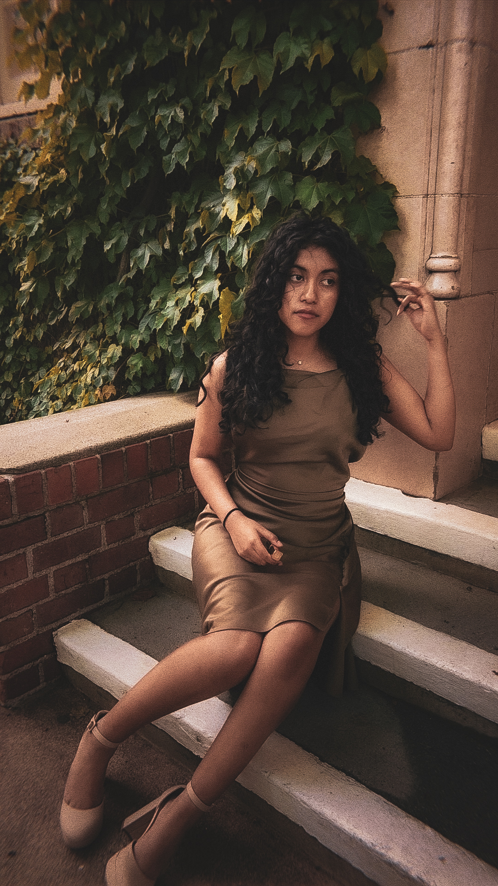

About Me
Welcome to my senior portfolio! I'm Ashley Rojas, a passionate student with interests in Robotics, Photography, and Capybaras! Throughout my high school journey at Weber Institute, I've worked hard to develop skills in research, project management, and teamwork while contributing to my community through various service initiatives.
This portfolio showcases my academic achievements, personal growth, and future aspirations as I prepare to transition to college and my professional career. Each section represents an important aspect of my development during these formative years.
Class of 2025
Future: Sacremento State

Skills & Competencies
Technical Skills
- Engineering Research
- Professional Note Taker
- Blueprint Design
- Technical Writing
- HTML/CSS Basics
Interpersonal Skills
- Team Leadership
- Conflict Resolution
- Mentoring
- Collaboration
Creative Skills
- Creative Writing
- Graphic Design
- Photography
- Problem Solving
- Presentation Design